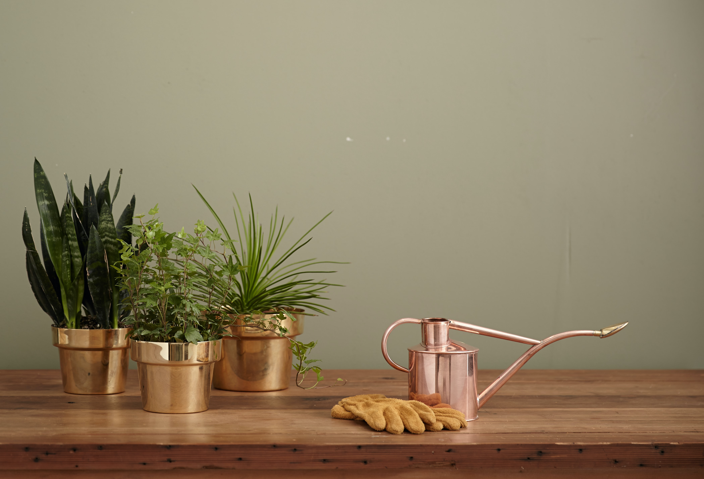

Garden Design & Creation

Starting a garden from scratch may seem daunting for a novice! But here at Lucky Shrub we have got everything you
need to get started. We will offer you great ideas and free garden plans for every type of yard,
whether it's big and sprawling or teeny-tiny
Maintenance and Landscaping

We are a landscape company that practices a landscape management approach,
one that fluidly toggles between detailed garden care, preventive hardscape maintenance, and
landscape equipment maintenance.
There are various reasons why you will need a company that takes this overall management approach.
We have the resources and expertise to deliver the detailed lawn and garden care that you
want to see when you step into your yard.
We also maintain your water feature or pond filtration equipment and monitors the irrigation system.